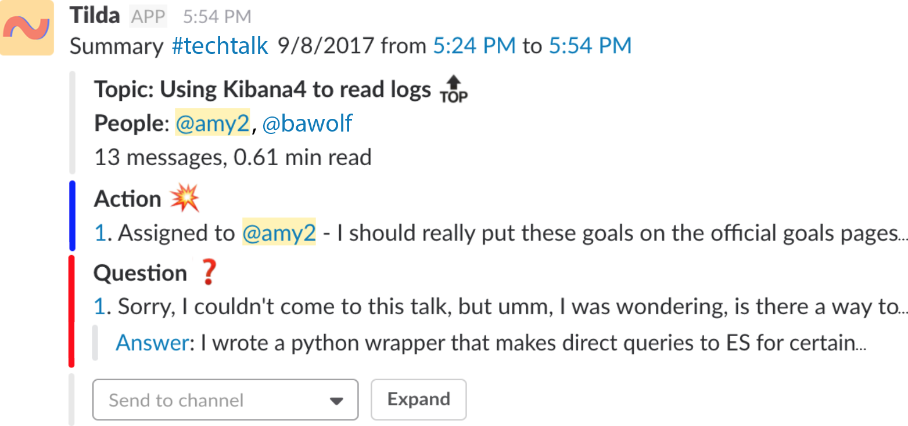

Tilda is a Slack tool to help you take notes of important conversations that you are having in Slack.
Tilda then creates summaries from the notes you take to help you look back or get an overview.
You can make notes in Tilda using
emoji reactions,
emojis in your message, or
slash commands.
For Tilda to work properly you must add @tilda as a member to any public channel, DM, private channel, multigroup DM
that you use a Tilda slash command or add a Tilda emoji, etc.
Possible Actions in Tilda
| Emoji |
Slash Command |
What it does |
|
üí•
|
/~addaction
|
Add an action item to the meeting (you can assign it to someone too)
|
|
❓
|
/~addquestion
|
Add a question to the meeting
|
|
❗
|
/~addanswer
|
Add an answer to the meeting
|
|
ü§ù
|
/~adddecision
|
Add a decision to the meeting
|
|
üí°
|
/~addidea
|
Add an idea to the meeting
|
|
üîùÔ∏è
|
/~addtopic
|
Add a topic to the meeting
|
|
ℹ️
|
/~addinfo
|
Add an information item to the meeting
|
 ️ ️
|
/~start
|
Start a meeting
|
|
üîö
|
/~end
|
End a meeting
|
|
|
/~addtag [optional tagname]
|
Add a topic tag to the meeting.
This command can be followed by nothing, which pulls up a
dialog to add a tag from a dropdown list of existing tags,
or typed with the tag name afterwards, to add a new tag (/~addtag mynewtag).
|
|
|
/~instructions
|
A handy manual appears explaining how to use Tilda.
|
|
|
/~currentsummary
|
See what notes are in the current summary, if there is one.
|
|
|
/~followchannel #channel_name [optional @person] [optional tag]
|
Type this to subscribe to summaries from #channel_name posted to this channel.
Can be called in any channel/private channel/private group/direct message that
contains @tilda as a member. Optional person or tag parameters are to subscribe to that subset only.
|
|
|
/~unfollowchannel #channel_name
|
Undos the above command – stop getting summaries from #channel_name posted to this channel.
|
How to Start and End Note-Taking
You can start a "meeting" using a slash command:
/~start
or the start emoji
️
(either add the emoji somewhere in your current message or tag an existing message with it as an emoji reaction).
Or just add a note (action item, idea, question, etc.) and we start it automatically for you!
Now that the meeting has been started in Tilda, you can add notes using emojis or slash commands
and these will get added to the current meeting notes.
Once you notice the conversation has ended, or things have drifted on to another topic, you can end your meeting using
a slash command:
/~end
or the end emoji üîö
If you start another meeting during your current one, Tilda will automatically end the previous meeting and start a new one.
Also, if some time has gone by with no activity, Tilda will end any ongoing meetings.
How to Add Notes to the Meeting and Interact with Notes
As mentioned, once a meeting's been started, you can add notes to it.
There's basically three ways: emoji reactions, emojis within a message, and slash commands.
Emoji reactions:
You can mark an existing message that someone has made with an emoji reaction
to annotate that message and make it a note. You can add an emoji
reaction by hovering over the message and clicking on the smiley that appears below.
Once you click on it, a window pops up where you can search for emojis.
As explained above, all of the notes have custom emoji names,
so if you type a note type, like "action", the emoji
for it should pop up.
This method can also be used to create summaries of conversations
that happened a while ago by annotating a start, annotating the end, and then annotating the notes in between.
Emojis in your message:
You can also tag a message that you’re currently writing by adding that emoji in
the message box. Typing ":" followed by the note name will
start searching for possible emojis.
Or you can click the smiley next to the message box.
Slash commands:
You can also add notes using slash commands.
All possible slash commands appear when you type / in the message textbox.
Typing /~ should pop up all the commands available for Tilda.
What are the pros and cons of each technique?
Emoji reactions are useful for marking messages that
happened earlier. This way, you can have a conversation just like
normal and as important things get hashed out,
they can be marked with an emoji reaction when you go back.
Slash commands should be used when you want
to add your current message that you're typing
to the notes or need to summarize something important that
happened over multiple messages.
After making a note, Tilda posts about it in the Slack. From there, you can click the buttons in Tilda's message to
delete the note, end the meeting, or see what the current notes are in the current meeting.
You can also see what notes are in the current meeting by typing
/~currentsummary.
You can also
link a note to a prior note in the summary.
This is helpful for linking answers to the right question or decision to an idea, or any other type of link.
Finally, for action items specifically, you can assign them to someone.
After a Meeting is Over

Tilda generates a summary from the notes you took.
Summaries are meant to be an
easier way to skim over missed conversations or remind yourself
of old conversations you’ve been in.
You can click on the link to the left of every note
to go to where it is in the original conversation.
If there are many notes, there’s also buttons to expand the
summary and view the notes chronologically or grouped by note type.
The summary will get posted to all the places that follow your channel.
You can cause another channel to follow the summaries from your channel
by typing in that other channel:
/~followchannel #yourchannel
This is useful if you want to have all your summaries living in 1 place for easy reference.
Or you can also limit this to only summaries that contain particular people or that have particular tags:
/~followchannel #yourchannel @person1,@person2 tag1,tag2
This is useful if you want to get more personalized summaries from a particular channel.
You could, for instance run this command in your private DM with Tilda.